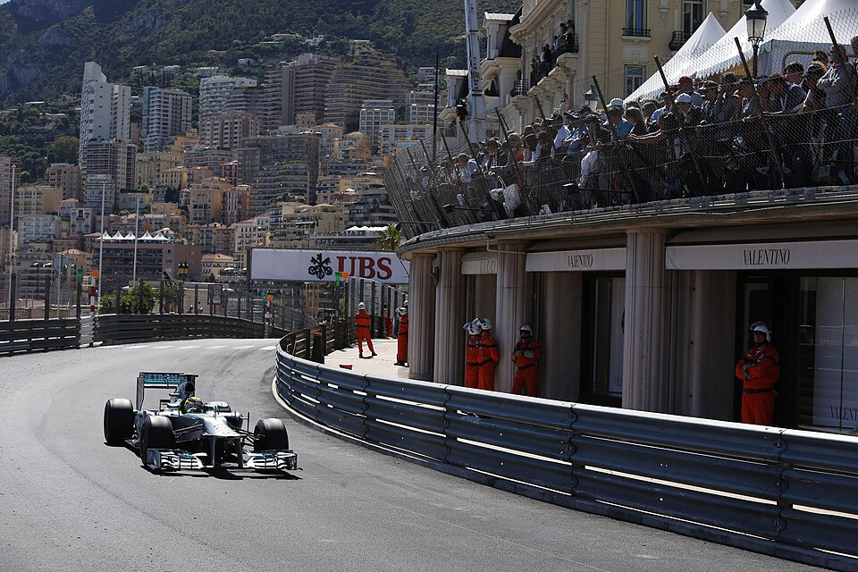

Circuit de Monaco
Country: Monaco | Street circuit · Lap length: 3.337 km · Race laps: 78

78Race laps
260km distance
StreetCircuit type
1929First held
About This Track
Monaco is the slowest and tightest track on the calendar. Overtaking is extremely difficult, so qualifying position is critical. Walls are close on every side — one mistake ends the session.
Famous Sections
Casino Square, the Tunnel exit, and the Swimming Pool section are the most famous parts of this harbour-side layout.